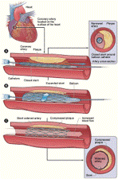

Mini-currículo
Home /
Mini-currículo /
Especialidade /
Contato
Formação profissional:
Graduado pela Universidade Federal de São Paulo (Escola Paulista de Medicina);
Residência em Clínica Médica pela Faculdade de Medicina da Universidade de São Paulo;
Residência em Cardiologia pela Faculdade de Medicina da Universidade de São Paulo;
Doutorado pela Faculdade de Medicina da Universidade de São Paulo;
Concurso de Livre-docência pelo Departamento de Clínica Médica da Faculdade de Medicina da Universidade de São Paulo.
Membro da Heart Rhythm Society (American Heart Association) e ECAS (European Cardiac Arrhythmia Society)

Atuação
Professor Associado do Departamento de Clínica Médica da Faculdade de Medicina da Universidade de São Paulo;
Coordenador Geral e Didático do Laboratório de Simulação da Faculdade Ciências Médicas de Minas Gerais;
Membro da Comissão Diretora do Centro de Cardiologia do Hospital Sírio-Libanês;
Coordenador do Programa de Residência Médica em Cardiologia do Hospital Sírio-Libanês;
Membro da Comissão Científica do Centro de Cardiologia.
